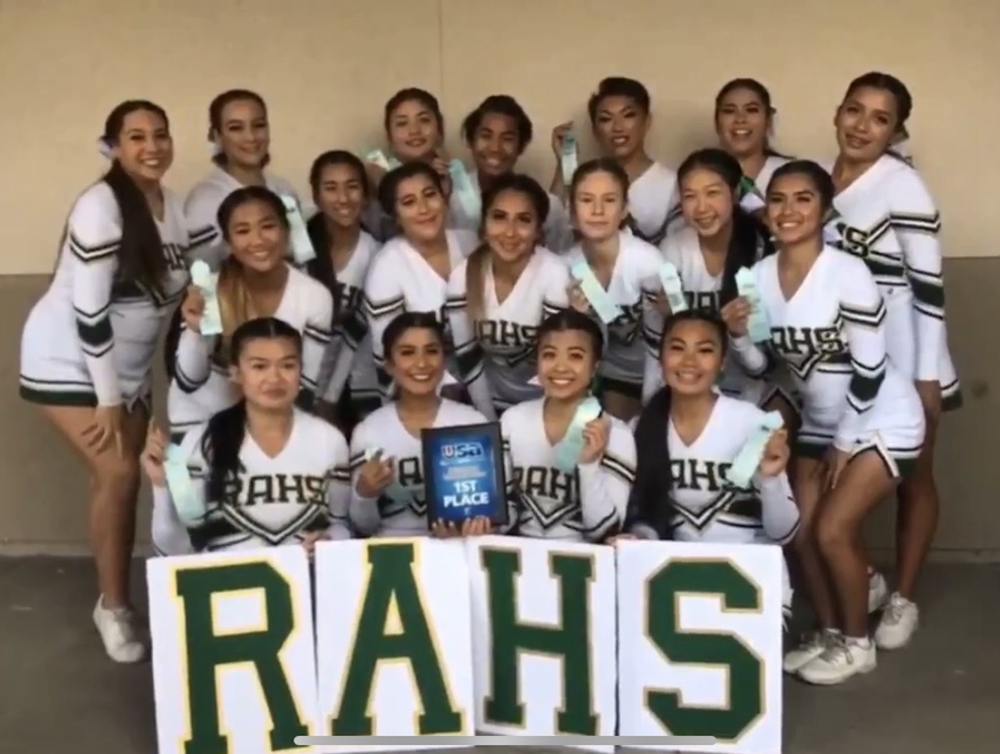
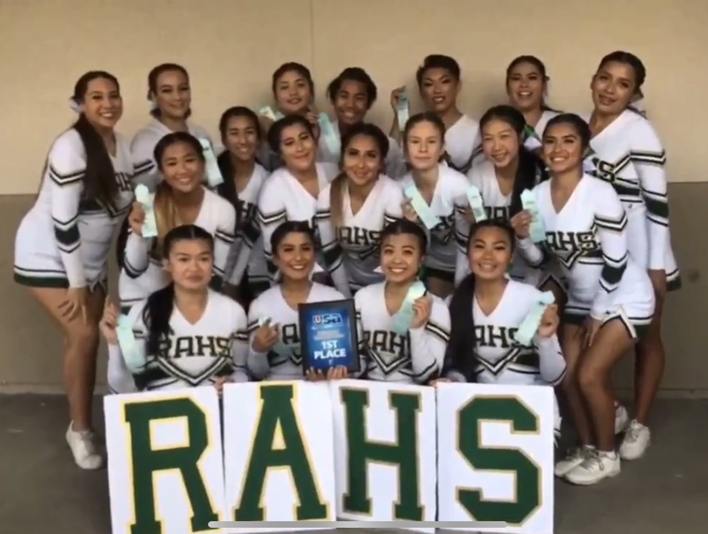

Kim Bui
I am currently a first-year undergraduate student at the University of California, Riverside, studying to pursue a Bachelor of Arts degree in Education, Society, and Human Development. I also hope to eventually go to Graduate School to receive a multi-subject teaching credential. My hope is to become an elementary school educator for young students in the Orange County area.
I grew up in the city of Westminster, staying in the Orange County area my entire life. I knew I wanted to be a teacher since the first grade, because of how influential a role my teachers had always played in my life. I went on to receive my high school diploma at Rancho Alamitos High School.
In my high school career, I got involved in a substantial amount of extracurricular activies, many of which correlated to my aspiring teaching career. I became Varsity Captain of my school's cheerleading team, a recipient of the prestigious Simon Family Foundation Scholarship, served as a teaching assistant at a local preschool and daycare, became a tutor and caretaker for two young boys, and joined an abundance of interactive clubs at my school.
Experience
Tutor & Caretaker
• Assisted two young boys in their academic endeavors
• Ensured development of useful working habits
• Addressed areas of improvement in reading, writing, and math skills
Teaching Assistant
• Led individual and group lessons for preschool programs of students ranging in age from newborn to toddler
• Assisted afterschool and daycare programs for students in grades pre-K-12
• Facilitated in establishing, developing, and recruiting members for a new volunteer program
Youth Leader
• Led retreat groups of 200 total students
• Weekly meetings and rehearsals
• Operated activities at church festivals
Education
UC Riverside
Portfolio


